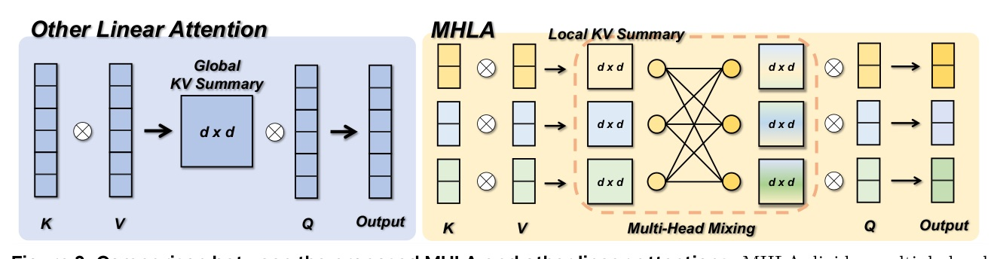
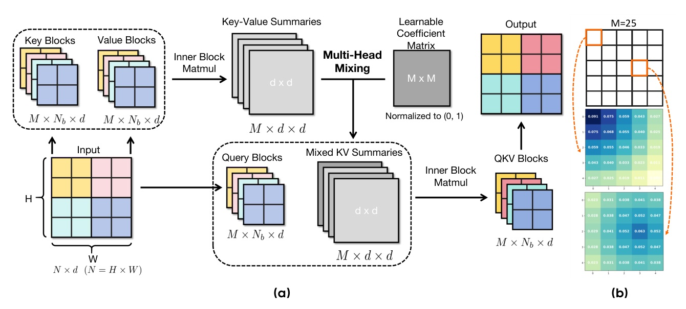

把 linear attention 的失準歸因到 global context collapse，再用 token-block multi-head mixing 把 query-conditioned selectivity 補回來。
Linear attention 快，但它把所有 token 壓進同一個 global KV summary；MHLA 的核心，是讓每個 query block 重新混合多個 local summaries。
Softmax self-attention
Standard linear attention
| Attention | Rank ↑ | Entropy ↓ | Interpretation |
|---|---|---|---|
| Linear Attention | 58.4 | 5.12 | 低 rank、高 entropy：多數 query 失去焦點 |
| Softmax Attention | 254.8 | 4.13 | 高 rank、較 sparse |
| MHLA | 233.4 | 4.06 | 接近 softmax 的 diversity / selectivity |

Figure-first takeaway: 以前是所有 query 讀同一個 Global KV Summary；MHLA 讓 query block 讀加權後的 Local KV Summaries。

| Method | Time | Rank bound | Memory | Query-conditioned |
|---|---|---|---|---|
| Self Attention | O(N2d) | N | O(N2) | Yes |
| Linear Attention | O(Nd2) | d | O(d2) | No |
| MHLA | O(Nd2 + M2d2) | Σ min(nb,d) | O(Md2) | Yes |
| Setting | Self / baseline | Best prior | MHLA |
|---|---|---|---|
| DeiT-T Top-1 | Self 72.2 / LA 69.8 | MALA 75.1 | 75.8 |
| DeiT-S Top-1 | Self 79.8 / LA 77.6 | RALA 80.4 | 81.0 |
| VLT-T Top-1 | - | MAViT-T 82.4* | 82.6 |
| VLT-S Top-1 | - | MAViT-S 84.3* | 84.6 |
| Model / res | Self FID ↓ | Linear FID ↓ | MHLA FID ↓ |
|---|---|---|---|
| DiT-S/2 256 | 68.40 | 89.72 | 59.80 |
| DiT-S/2 512 | 84.54 | 125.33 | 78.63 |
| DiT-B/2 256 | 43.47 | 60.47 | 37.47 |
| DiT-XL/2 256 | 19.47 | 28.63 | 20.32 plain / 19.17 +CPE+Gate |
| Wan2.1 variant | Quality ↑ | Semantic ↑ | Total ↑ | Latency ↓ |
|---|---|---|---|---|
| Wan-FA | 85.23 | 75.65 | 83.31 | 166 |
| Wan-LA | 69.96 | 11.38 | 58.24 | 82 |
| Wan-MHLA | 84.26 | 76.16 | 82.62 | 81 |
| Wan-MHLA-H | 84.87 | 79.59 | 83.82 | 103 |
Vanilla LA 在 31,500-token video setting 幾乎不是「慢慢變差」，而是訓練直接卡住；這正好回扣 global context collapse。
Text-to-Image SANA
| Model | FID ↓ | CLIP ↑ | GenEval ↑ |
|---|---|---|---|
| SANA* | 6.10 | 28.15 | 0.64 |
| SANA-MHLA | 5.90 | 28.26 | 0.68 |
NLP 340M / 325M
| LB-init | Learnable | Top1-acc (%) | Read |
|---|---|---|---|
| Yes | No | 75.4 | locality prior 本身有效 |
| No | Yes | 75.1 | 可學但缺少穩定 prior |
| Yes | Yes | 75.8 | prior + data adaptation |
| Head number M | FID ↓ | Throughput ↑ | Interpretation |
|---|---|---|---|
| 4 | 79.56 | 435 | 便宜但略弱 |
| 16 | 78.63 | 435 | 最佳 sweet spot |
| 64 | 79.50 | 408 | 超過 sqrt(N) 後 overhead 出現 |
在 DiT-S/2 512px，N=1024；作者依 M2 <= N 的原則，指出 M=16 就足夠。
“As the sequence length N increases, the information requiring representation exceeds the capacity of the fixed-size d x d matrix, leading to performance saturation. We term this phenomenon global context collapse.”
隨序列長度 N 增加，需要被表示的資訊量超過固定 d x d 矩陣容量，造成效能飽和；作者稱之為 global context collapse。§3.2 p.4
“Eq. 5 makes the mechanism transparent: each query-block rescales the contribution of entire blocks via m_i, and within each block the usual kernel inner product differentiates tokens.”
Eq.5 把機制說清楚：query block 先透過 m_i 重新加權整個 block，block 內再用 kernel inner product 區分 token。§4.2 p.7
“At this extreme sequence length, vanilla LA suffers severe degradation due to global context collapse, whereas MHLA preserves linear-time complexity and recovers performance comparable to the original FlashAttention-based Wan2.1-1.3B, achieving a 2.1x inference speedup.”
在極長序列下，vanilla LA 因 global context collapse 嚴重退化；MHLA 保留線性時間，同時接近原本 FlashAttention Wan2.1-1.3B 的表現，並達到 2.1x 推論加速。§5.3 p.10
Reviewer note: OpenReview forum 已確認，但 reviewer JSON 因 HTTP 403 無法抓取；本 deck 不推測 reviewer score。
週五會轉到 quantization、distillation、pruning 或 inference efficiency。今天這篇的餘味是：省算力以前，先確認模型還保有「選擇性」。